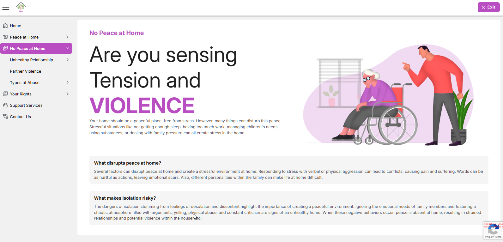
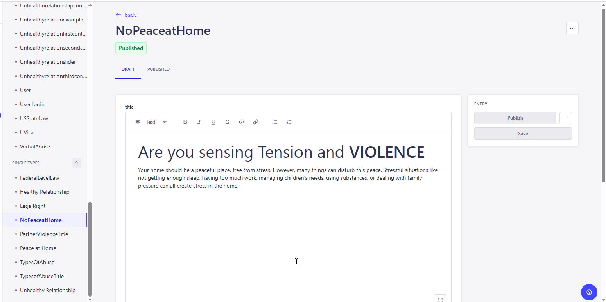
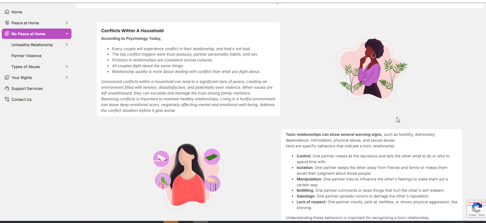
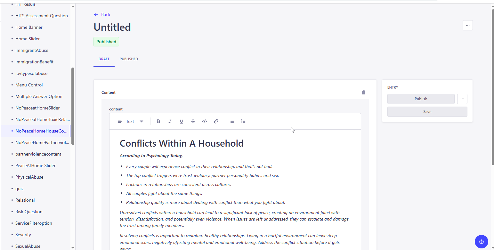
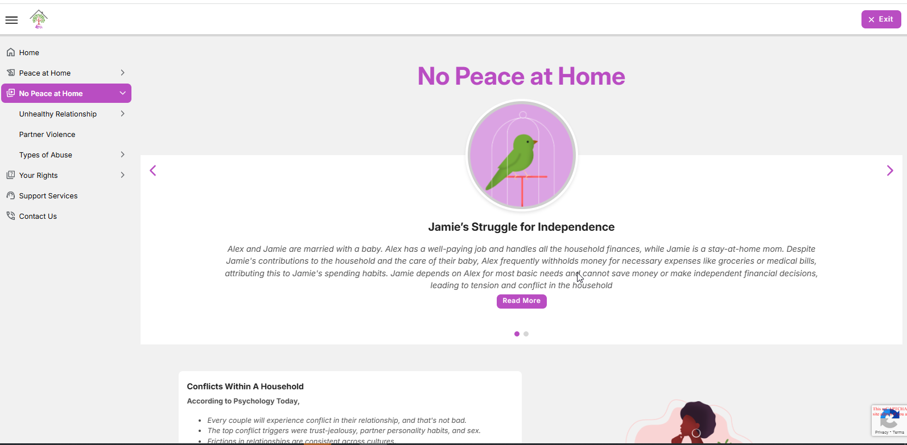
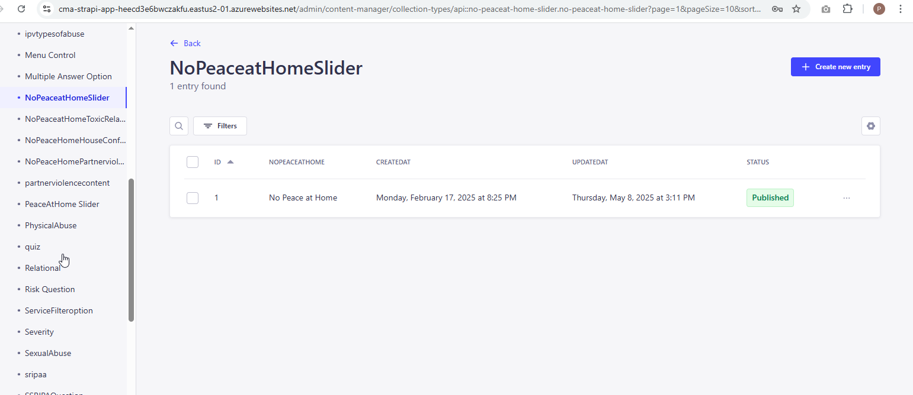

<link rel="stylesheet" href="../css/styles.css">
 
<main>
        <h2>No Peace at Home</h2>
        <p> 
            The Page describes about the following things to identify the address when there is no peace at home.
             Your home should be a peaceful place, free from stress. However, many things can disturb this peace. Stressful situations like not getting enough sleep,
             having too much work, managing children's needs, using substances, or dealing with family pressure can all create stress in the home.<br>
        1. The user inputs a valid URL to launch the Education Module and the URL is : 
           <a target="_blank" href=https://happy-grass-02e46c50f.6.azurestaticapps.net/nopeaceathome>No Peace at Home</a> <br>
        2. The No Peace at Home displays the topics' content and Slider information.<br> 
            <br><br>
           The administrator must access the CMS site in order to add, edit, and update the material on the page..<br><br>
           Go to CMS > Content Manager > Select and open the 'No Peace at Home' under the Single type from the side menu.<br>
            <br>
           Update the content if required and Click on Publish to make the changes refelects in the application. <br><br>        
        3. The No Peace at Home also have some topices about the conflicts within the family, Toxice Relationship and IPV etc.,and the admin can update the topic that is based on the need<br>
            <br><br>
           Also, the user can add/Edit and delete the content over here in CMS site >Content Mangaer>Select and open the relevant menu from the side menu list.<br>
            <br><br>
        <h4><b><u>No Peace at Home Slider</u> </b></h4>  
        4. A slider with forward and backward arrows at the bottom of the page allows the user to navigate between the sliders..<br>
           All these slider contents are stored in the CMS with its images and user can able add/edit and updated the content based on the requirments <br> 
            <br><br>
           <u>New Entry / Update the Existing Slider Content.</u><br>
           For Home Sliders: Go to CMS > Control Manager > Select and open 'No Peace at Home Slider > 
           Click on Create new Entry for adding the new or open the exisiting content, update and save it.<br>           
            <br>
           Update the content if required and Click on Publish to make the changes refelects in the application. <br>
       
        </p>
    </main>